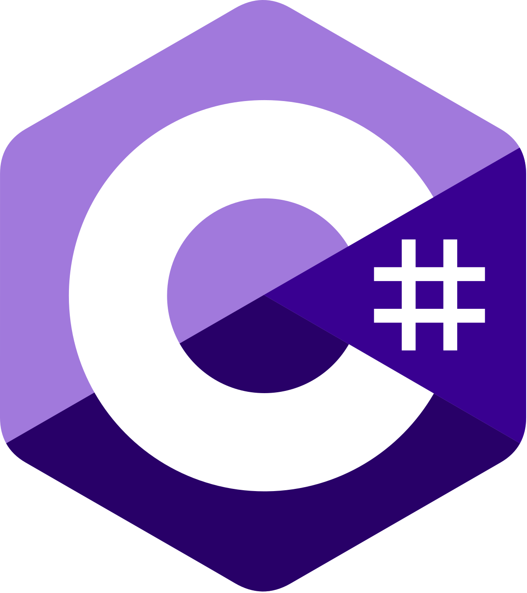
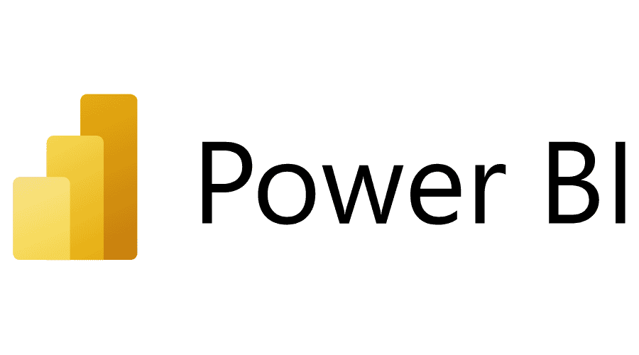
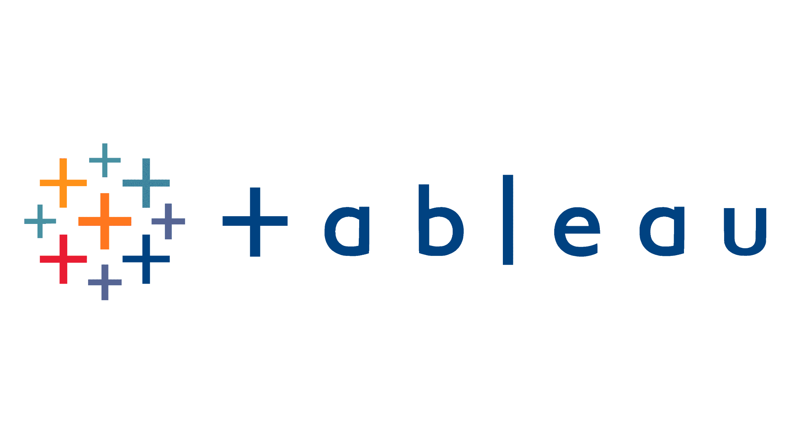
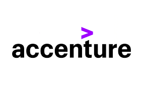

Tushar Shandilya
As a passionate student of data science and business intelligence, I aim to leverage my knowledge of predictive analytics, machine learning, and data visualization to provide meaningful insights and drive solutions. With hands-on experience in optimizing data quality, developing predictive models, and improving operational efficiencies through academic projects, I am committed to refining decision-making processes and contributing to impactful outcomes. My strong problem-solving skills and ability to translate complex data into actionable insights motivate me to push the boundaries of what's achievable in the field of modern analytics.
Experience
 Data Analyst Trainee
Data Analyst Trainee
Accomplished a comprehensive fitness data analysis project, processing over 500 cardio activity records by addressing 40% missing heart rate data. Improved data quality and transformed unstructured datasets, delivering valuable insights into weekly and annual fitness trends from 2013 to 2018.
Oversaw data cleaning techniques, spearheading the application of advanced methodologies in Power BI and MS Excel (VLOOKUP, Pivot Tables, VBA), which resulted in actionable insights for optimizing company fitness programs.
Collaborated closely with cross-functional teams to streamline analysis workflows and improve the reporting process, directly contributing to enhanced decision-making and efficiency across departments.
Technologies Used: Power BI, MS Excel (Pivot Tables, VLOOKUP, VBA), Python
Data Analyst
Led data cleaning and analysis of over 500,000 data points for complex medical datasets, boosting data quality by 25% and optimizing processing times by 30%. Designed and implemented rigorous data modeling techniques that improved operational workflows and enhanced decision-making capabilities.
Coordinated with stakeholders to deliver critical insights, ultimately improving client satisfaction and increasing operational efficiency by 15%. Leveraged Python, SQL, and Power BI to streamline data processing and visualization.
Spearheaded cross-functional initiatives to improve the data collection and analysis pipeline, significantly reducing redundancy and enhancing the quality of delivered reports.
Technologies Used: Python, SQL, MS Excel (Pivot Tables, VLOOKUP), Power BI, Tableau
Peer Mentor
Developed and facilitated technical workshops, mentoring over 800 students in key data analytics concepts and tools. Orchestrated collaboration among volunteers to execute JU Rhythm 2023, improving operational efficiency for an event with over 13,000 attendees.
Directed event logistics and communication, ensuring seamless coordination with the Student Development Officer and delivering a successful experience for attendees and participants alike.
Projects
Road Safety Analytics
Spearheaded the analysis of road accident data using Tableau and SQL, revealing a 28.6% reduction in incidents from 2021 to 2022. Developed and optimized databases to integrate multiple data sources for large-scale analysis, generating insights that led to significant improvements in road safety measures.
Coordinated with municipal authorities to present findings, influencing policy changes and infrastructure improvements that enhanced public safety.
Technologies Used: Tableau, SQL, Data Analysis
Hospitality Revenue and Booking Analysis
Achieved a $1.69 billion revenue impact by analyzing over 132,000 bookings using Power BI, DAX, and MS Excel. Engineered dynamic dashboards and KPIs to provide actionable insights, facilitating strategic business decisions that optimized revenue realization by 70.1%.
Identified key platforms generating over $0.5 billion in business bookings, which allowed leadership to refine their marketing and operational strategies for greater impact.
Technologies Used: Power BI, DAX, MS Excel
Student Clubs Management Database
Led the development of a robust data management framework that improved storage efficiency by 30%. Optimized database performance using SQL, enhancing data consistency and accuracy, and collaborated with cross-functional teams to boost overall project efficiency by 20%.
Implemented data governance processes that ensured secure and scalable data storage, positioning the system for future growth and facilitating seamless student club operations.
Technologies Used: SQL, Database Management
Brain Stroke Dataset Analysis
Refined and standardized brain stroke datasets, improving data quality by 30%. Applied advanced data cleaning techniques, ensuring accurate predictive outcomes.
Developed Random Forest models with a 99.26% accuracy, significantly enhancing the precision of the predictions.
Led the creation of an interactive application that improved early intervention efforts by 35%, utilizing machine learning algorithms to optimize user engagement and response mechanisms.
Technologies Used: Python, Random Forest, Machine Learning Algorithms, Data Preprocessing
Skills
- 
-

- 
- 
- Data Visualization (Tableau, Microsoft Power BI)
- Data Tools (SQL, MS Office, MS Excel - Macros, Pivot Tables, VLOOKUP)
- Database Querying (SQL, VBA)
- Business Statistics
- Business Intelligence (BI Dashboard Creation, KPIs, Reports, Data Transformation)
- Data Mining and Analysis
- Programming Languages (Python, C#, Java)
- Communication and Public Relations
- Analytical Thinking and Problem Solving
- Commitment to Learning and Critical Thinking
- Change Management
- Teamwork and Collaboration
Education
Douglas College
Jaipur Engineering College and Research Center University
Extracurricular Activities
 Accenture Virtual Internship - Data Analyst
Completed a virtual internship where I advised a hypothetical social media client on data insights. Analyzed and cleaned 36.5 million posts to identify top content categories and optimize engagement strategies for the client’s IPO.
Designed dashboards using MS Excel and implemented advanced data modeling techniques to refine content strategy. Recommended three key strategies to optimize client content for social media engagement, directly influencing the IPO strategy.
Technologies Used: MS Excel (Pivot Tables, Macros), Data Cleaning, SQL
JU Rhythm 2023 Event Organizer
Led the coordination of 800 volunteers to organize JU Rhythm 2023, a major university event with over 13,000 attendees. Developed event logistics and orchestrated project management tasks that improved operational efficiency.
Collaborated with the Student Development Officer to implement changes that boosted volunteer productivity by 20%, ensuring smooth execution of activities for the event.
Technologies Used: Project Management, Event Coordination, Leadership